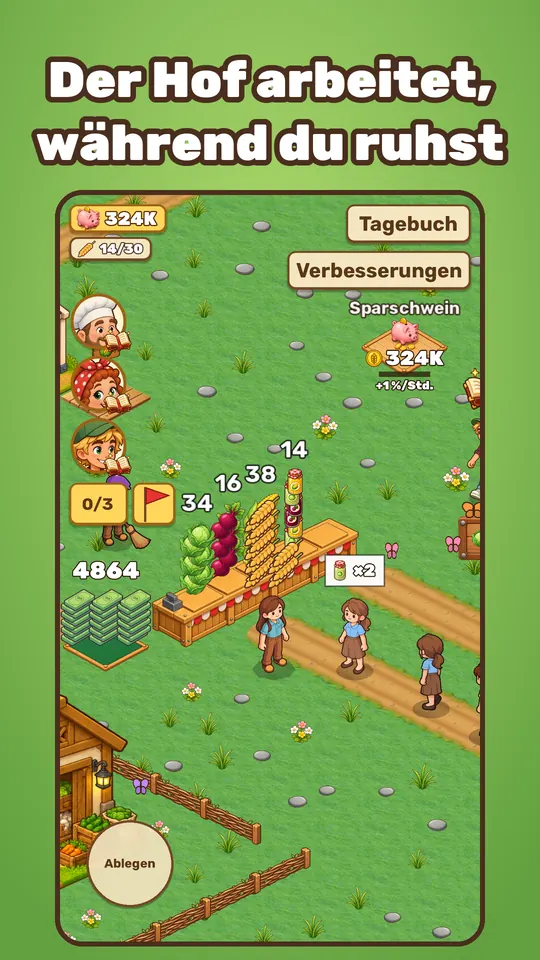
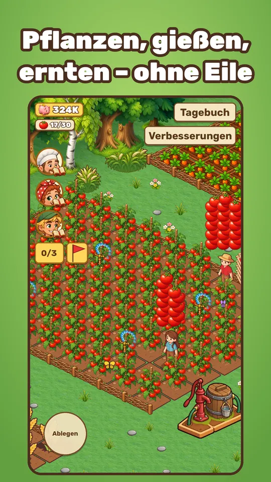
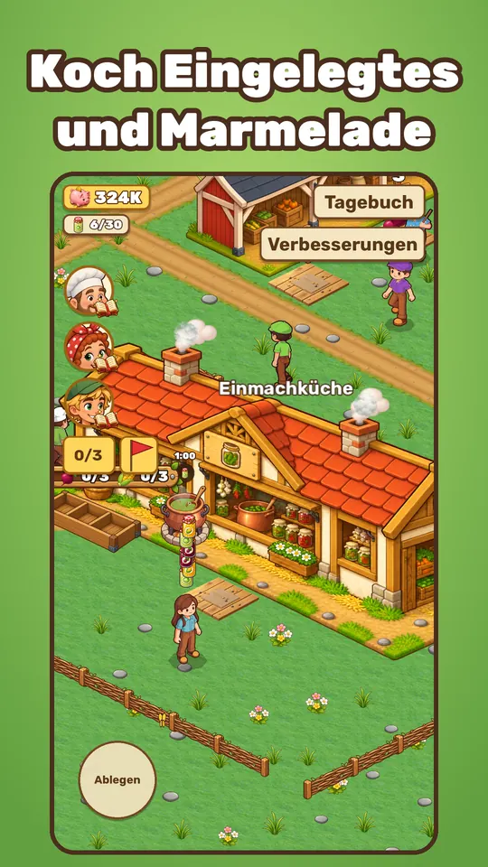
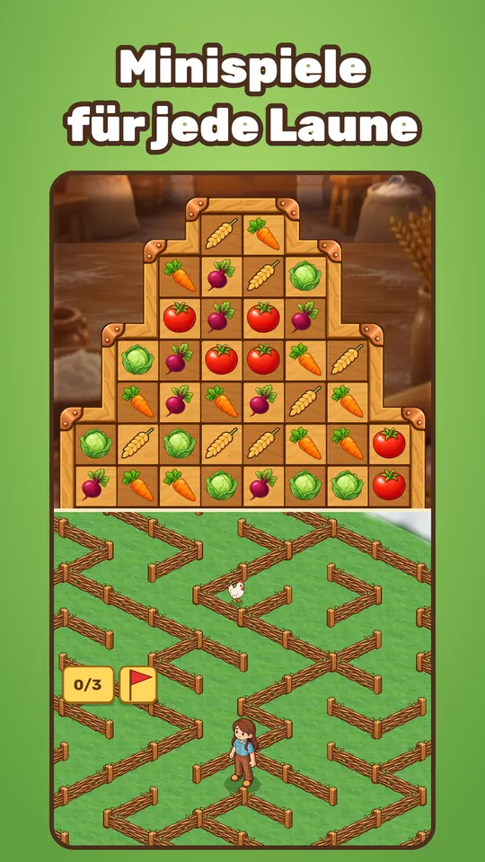

Gartenwerk Games · unabhängiger Spieleentwickler aus Deutschland
Garten: Farm & Bäckerei

Garten: Farm & Bäckerei ist ein gemütliches Farmspiel mit Bäckerei fürs Handy (Android). Oma ist ans Meer gezogen und hat dir ihren verwilderten Hof hinterlassen: Ernte anbauen, dem Bäcker helfen, Eingelegtes und Marmelade kochen und Helfer anstellen, die den Hof am Laufen halten, während du ruhst. Offline spielbar, ohne Internet, keine In-App-Käufe – Werbung nur als freiwillige Belohnungsvideos.
Jetzt bei Google Play · kostenlos, ohne In-App-Käufe
Was du in Garten machst
- Pflanzen, gießen, ernten – vom Weizen bis zur Wassermelone – und die Ernte an die Stände bringen.
- Gärtner und Träger anstellen: eine entspannende Idle-Farm, die auch verdient, wenn das Spiel geschlossen ist.
- Dem Bäcker im 3-gewinnt-Minispiel helfen, Eingelegtes und Marmelade kochen, den Weg durch Nebel-Labyrinthe finden.
- Die Nachbarn kennenlernen – jeder hat seine Geschichte – und neue Seiten in Omas Tagebuch lesen.
- Kurze Runden von 5–10 Minuten mit Tageszielen. Keine Kämpfe, keine Hetze.
Screenshots




Gut zu wissen
- Handyspiel ohne Internet: offline spielbar, kein WLAN nötig.
- Keine In-App-Käufe. Werbung nur als freiwillige Belohnungsvideos – ohne Zwangswerbung.
- Erfolge und Cloud-Speicherstände mit Google Play Spiele.
- Sprachen: Deutsch, Englisch, Russisch.
- Entwickelt von einer Person in Deutschland.